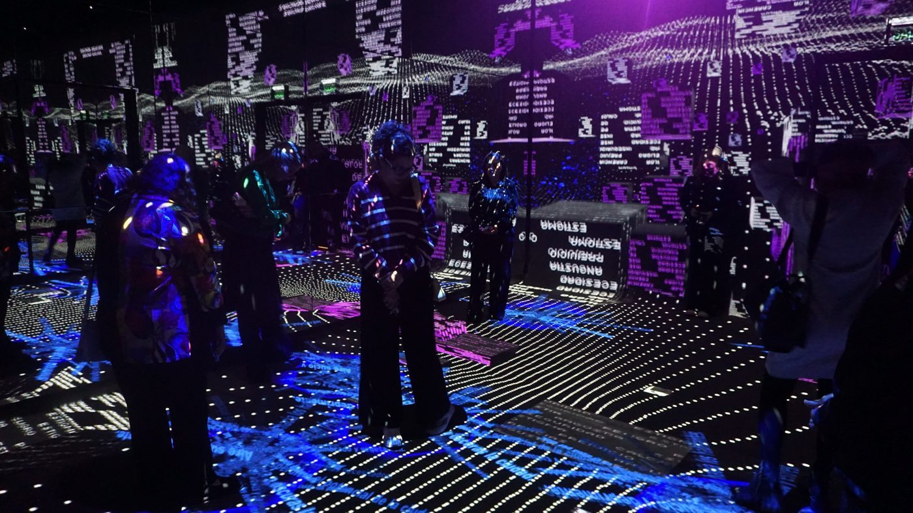
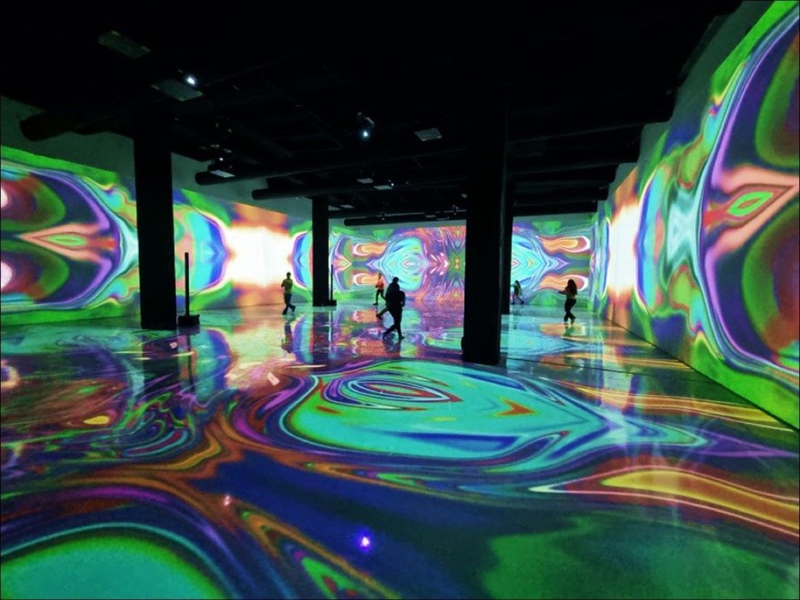
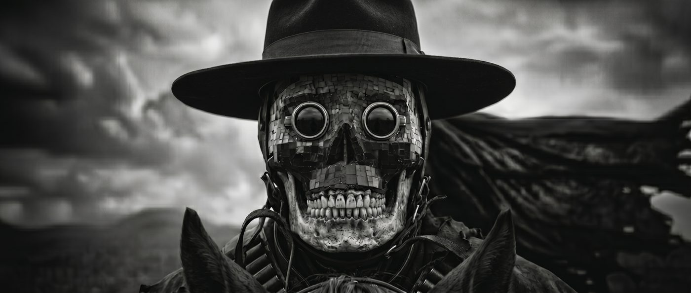

Spaces are not watched. They are walked into. Twenty years turning stories into places, and now directing AI like a film crew.



Trusted by Celebrity Cruises · Royal Caribbean Group, Secretaría de Cultura CDMX, Metro CDMX, Museo Internacional del Barroco, Ciudad Juárez, Centro de Ciencias de Sinaloa, La Isla Cancún, Walmart, Terán, Fresno, InSite, Pasatono Orquesta
Tell me about your projectPieces, scenes and tests made with generative video, from character studies to projections.
Twenty years across film and television, documentaries, commercials, music videos and series. Communication Sciences at Universidad Iberoamericana.
Documentary taught me to look. Research is the core of how I create, and it is how I direct generative models today.
Co-founder of Lúdica Lab, an immersive experience studio in Mexico City. Master in AI for Visual Creation at LABASAD, Barcelona.